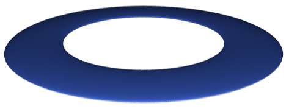

You can distort shapes, and make them bigger or smaller using the scale operation.
A scale operation is specified by giving three scale factors, one for each axis:
You can use this operation for compressing a torus along the Y axis:
But you can also use a scale operation with three equal factors, to reduce or augment the size of a shape without distorting it. In that case, this variant is handy:
The scene optimizer can directly apply a scale operation to several shape types, as boxes. Vertical cylinders and cones can also "absorb" the impact of scale changes when they only affects the Y axis.
You can use the size infix operator as a better way to perform a scale change:
sphere(^0, 1.0, plastic(royalBlue))
size [0.1, 1.0, 1.0]
You can provide a single real value in the second operand of size if you want the same scale factor for the three axis:
aComplexShape(x, y, z)
size 0.1
A common case happens when you first rotate a box to scale it later. You could, for instance, use the resulting shape to model a clock's hand:
box(-1, -1, -1, +1, +1, +1, handMat)
spin 45^Y
size [0.1, 0.1, 1.0]
The rotation cannot be canceled because it's acting on an axis-aligned cube. And even worse, you can't commute rotations and scale changes!
We use a trick for these cases: a special transformation that applies both a rotation and a scale change in just one step.
Home | Small Instantiation Language overview | SILLY predefined shapes | CSG operations | Translate | Rotate | Infinite surfaces